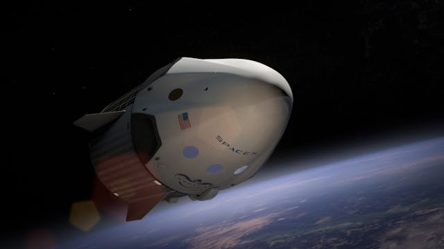

Az űrhajók az emberiség legnagyobb technológiai vívmányai közé tartoznak. Ezek a lenyűgöző szerkezetek tették
lehetővé, hogy kilépjünk bolygónk határain túlra, és felfedezzük a világűr végtelen titkait. A kezdeti kísérleti
űreszközöktől egészen a modern, többfunkciós űrhajókig hosszú utat járt be az űrkutatás.

Ma már nemcsak tudományos célokat szolgálnak, hanem a jövő egyik kulcsát is jelentik: új bolygók felfedezését,
űrbázisok létrehozását, sőt akár az emberiség többbolygós fajként való fennmaradását. Az űrhajók nem csupán
gépek — a kíváncsiság, a bátorság és a fejlődés szimbólumai.
Fedezze fel oldalunkat, hogy többet megtudjon a különböző országok űrhajóiról, történetükről és jövőbeli terveikről!